LOCATION & STAY
酒店位置

STILL HOTEL · SHENZHEN
深圳喜马拉雅酒店
坐落于深圳龙华区新区大道，以安静舒适的客房与自然松弛的公共空间，陪伴每一次城市停留。
酒店设施
AMENITIES- 网络与办公
- 无线网络 · 公共办公区 · 会议室
- 餐饮服务
- 餐厅 · 早餐 · 咖啡吧
- 休闲健身
- 健身房 · 户外泳池 · 休息区
- 便捷服务
- 24小时前台 · 行李寄存 · 自助洗衣
- 停车出行
- 停车场 · 叫车服务 · 充电设施
- 客房配置
- 空调 · 智能电视 · 吹风机 · 浴袍

N新区大道民康路民治大道深圳喜马拉雅酒店
民治站 C 口
步行约 200 米
周边示意 · 实际路线以导航为准
深圳市龙华区新区大道
近民治地铁站 C 口